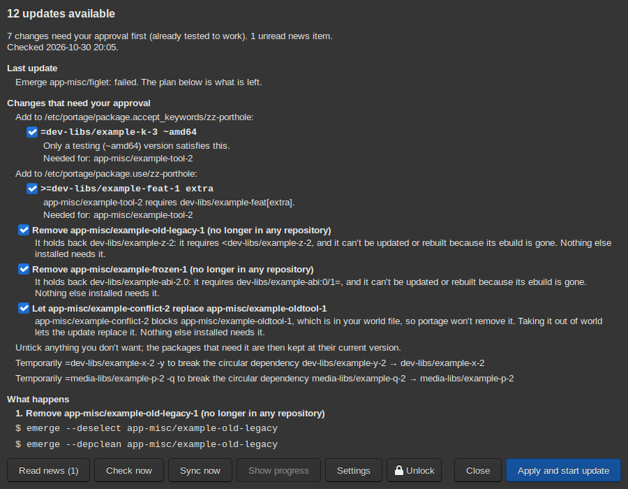

Gentoo updates often need more than "update everything": a USE flag changed on a dependency, a testing version accepted, packages that block each other, programs rebuilt because a library they use changed. Porthole's update assistant works these out before anything is built, checks every change it proposes with Portage, and shows you the plan.
Open it with the Updates button, Porthole, Update Assistant, or the tray icon. The plan comes from the last check: the scheduled one (see Syncing), or one you start with Check now.

At the top is a one-line summary ("12 updates; 2 changes need your approval") and when the check ran. Below, only the parts that apply:
/boot not mounted when a
kernel is updated. These have to be fixed first.zz-porthole, in the
package.* directories). Every one was checked: Portage worked
out the whole update with it. Untick one to refuse it; what needed it is
then held back instead. Larger steps are listed here too, such as
switching to a new GCC version or removing a package that stands in the
way.Finally the packages. The letter says what happens to each: U update, N new, NS new slot, R rebuild, D downgrade, L live package with new upstream commits. Untick a package to leave it at its version.
Unticking a package or a change, or choosing an option for something held back, changes the plan, so it has to be worked out and checked again. A bar appears: Re-plan with my choices does that (as you, no password); Undo changes goes back. The update can't start until the plan matches your choices. Choices are remembered for later checks, until you undo them.
Press Apply and start update. You are asked for the administrator password (unless Porthole is unlocked). If a build window is set, you can start now or Build in the window: see How updates run.
The runner checks the plan again as root and goes ahead only if it is the one you approved. It writes the approved changes, then runs the steps. You can close Porthole; the job window and the tray icon show how it is going. If a step fails, the rest is skipped and the plan is checked again, so the review shows what is left.
If the package tree was synced or your Portage configuration changed after the check, a bar says so and the update can't start: press Check now first.
Next: How updates run